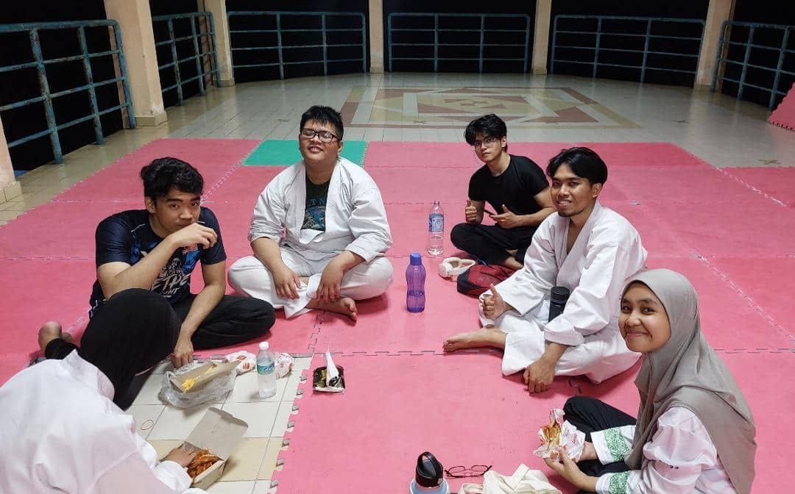
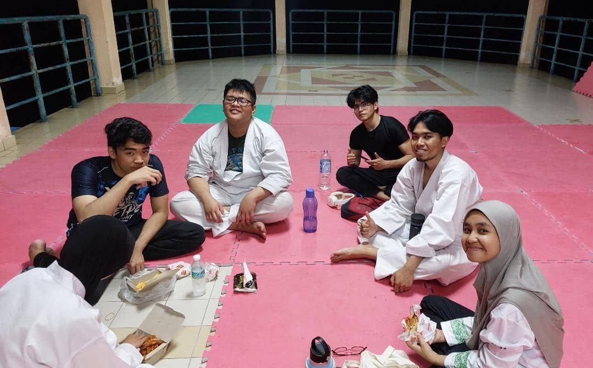

More than just a martial arts club, we are a tight-knit community of students brought together by a shared passion for Aikido. Our nature is defined by the principles of respect, discipline, and continuous learning.
Whether you're a beginner or an advanced practitioner honing your skills, the IIUM Aikido Club provides a welcoming space for growth and camaraderie.
Our Objectives
To create networking among students and staff of all universities In Malaysia and international that possess similar interest in Aikido
To bring along people of different culture and nationalities to do activities and bind them in Islamic brotherhood.
⚞ Testimonials ⚟
"Joining IIUM Aikido Club was one of the best decisions I've made. The instructors are not only skilled but incredibly patient and supportive. The sense of community within the club is empowering, and I've gained not only Aikido skills but also lifelong friendships. It's a journey of self-discovery and personal growth. Highly recommended!"
Syed Putra, President IIUM Aikido Club 23/24

Frequently Asked Questions
Do I need any prior martial arts experience?
No experience required! We welcome complete beginners. Our training is structured to help you learn at your own pace, with seniors always ready to guide you through the basics.
What should I wear to training?
For your first few sessions, comfortable workout clothes (t-shirt and track pants) are fine. Once you decide to continue, you'll need to get a gi (martial arts uniform) which we can help you obtain.
Is Aikido safe? Will I get injured?
Aikido emphasizes safety and control. Techniques are practiced cooperatively with partners, and you'll learn proper falling techniques (ukemi) to protect yourself. Our instructors prioritize a safe training environment.
Can I try a class before committing?
Yes! Your first class is completely free. Just come to any training session during our regular schedule. No registration needed for your trial—just show up and experience Aikido firsthand.
How much does membership cost?
Membership fees are affordable and cover the entire semester. Contact us via WhatsApp or email for the current rates. We also offer flexible payment options for students.
Is Aikido suitable for women?
Absolutely! Aikido doesn't rely on physical strength—it uses an attacker's energy against them. We have many female members, and the art was designed to be effective regardless of size or strength.
Training Schedule
üìÖ Schedule
Every Monday & Thursday
9:00 PM - 11:00 PM
üìç Venue
IIUM Female Sport Center
Gombak Campus
Belt Progression
Aikido uses a kyu (student) and dan (black belt) ranking system. Here's what to expect at each level:
6th & 5th Kyu (White Belt)
Basic stances (kamae), falling techniques (ukemi), and fundamental movements (tai sabaki). Introduction to basic techniques like ikkyo and shiho-nage.
~3-6 months training4th & 3rd Kyu (Yellow/Green Belt)
Expanded technique repertoire including nikyo, sankyo, kote-gaeshi. Multiple attack variations (katate-dori, ryote-dori, shomen-uchi).
~1-2 years training2nd & 1st Kyu (Brown Belt)
Advanced techniques, weapons training (jo, bokken), and multiple attacker scenarios. Preparation for dan examination.
~2-4 years trainingShodan & Above (Black Belt)
Mastery of all fundamental techniques. Focus on refinement, teaching ability, and developing personal expression of Aikido principles.
4+ years dedicated training* Belt colors and requirements may vary. Gradings are conducted by certified instructors.